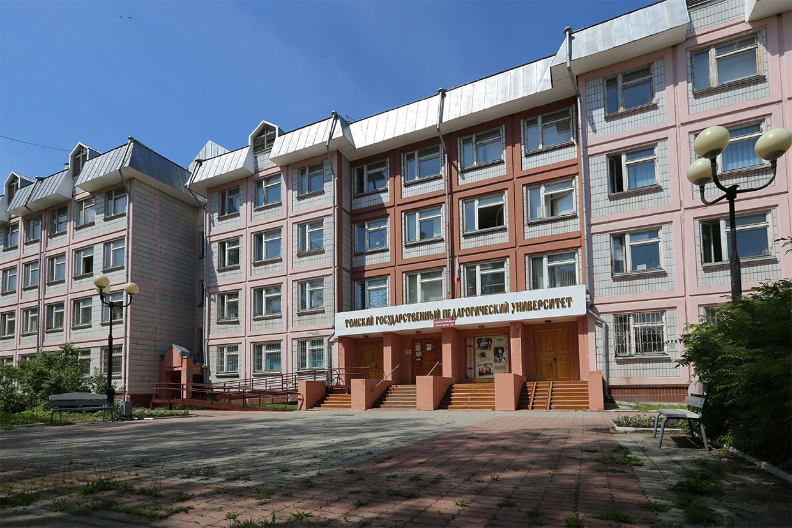

О ТГПУ
Томский государственный педагогический университет. Основан в 1902 году, и является старейшим в Сибири профессионально-педагогическим учебным заведением.
Девиз университета: Omnia hic initiantur, что переводится как: "Всё начинается здесь".
Звучит всё это хорошо, однако в народе про "пед" ходит такая присказка: "Совести нет - иди в мед. Ума нет - иди в пед. Считаю, что справедливым также будет
выражение "ВЫБОРА нет - иди в пед". А как обстоят дела на самом деле, лично я смогу ответить только после выпуска.
